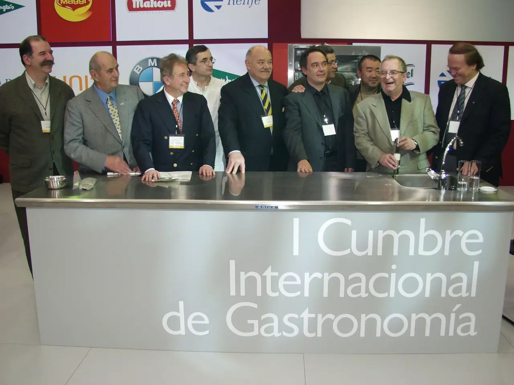

Festivals · Food
Madrid Fusión 2027
- Dates
- –
- Location
- Madrid, Spain
- Format
- In-person
- Category
- Food
- Industry
- Food
- Organiser
- Madrid Fusión
- Expected attendance
- 25,992 visitors (2026 edition, official 'by the numbers')
- Official website
- https://www.madridfusion.net/
About
Topics: gastronomy, chefs, congress.
Official 2026 edition figures published on the organiser homepage (25,992 visitors; 1,722 congress participants).
Sources
Hotels
- Hotel Barcelo Emperatriz — 5★ · CALLE de López de Hoyos 4, 28006 Madrid · 6.9 km from the venue · Price on request
- Pullman Madrid Airport & Feria — 4★ · AVDA de la Capital de España Madrid 10, 28042 Madrid · 0.5 km from the venue · Price on request
- Hesperia Madrid — 5★ · PASEO de la Castellana 57, 28046 Madrid · 7.0 km from the venue · Price on request
- Sercotel Alcala 611 — 4★ · CALLE de Alcalá 611, 28022 Madrid · 2.1 km from the venue · Price on request
- AC Feria de Madrid — 4★ · CALLE Vía de los Poblados 3, 28033 Madrid · 1.7 km from the venue · Price on request
- Eurostars Madrid Tower — 5★ · PASEO de la Castellana 259, 28046 Madrid · 6.1 km from the venue · Price on request
- Heritage — 5★ · CALLE de Diego de León 43, 28006 Madrid · 6.3 km from the venue · Price on request
- Hotel Best Osuna — 4★ · CALLE de Luis de la Mata 18, 28042 Madrid · 1.5 km from the venue · Price on request
- Barcelo Imagine — 5★ · CALLE AGUSTIN DE FOXA 32, 28036 Madrid · 5.8 km from the venue · Price on request
- Silken Puerta America Madrid — 5★ · AVDA de América 41, 28028 Madrid · 5.3 km from the venue · Price on request